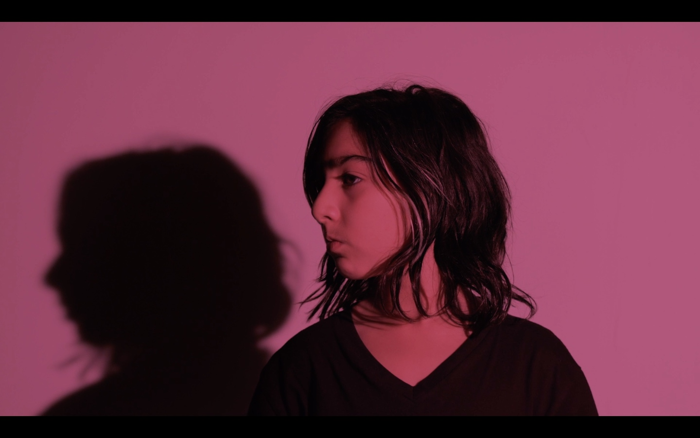
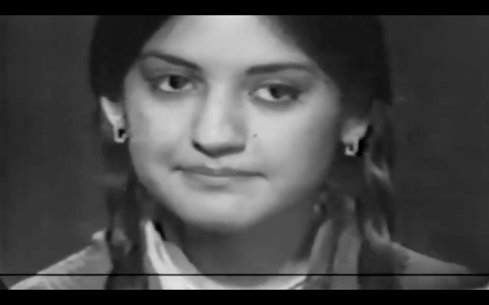
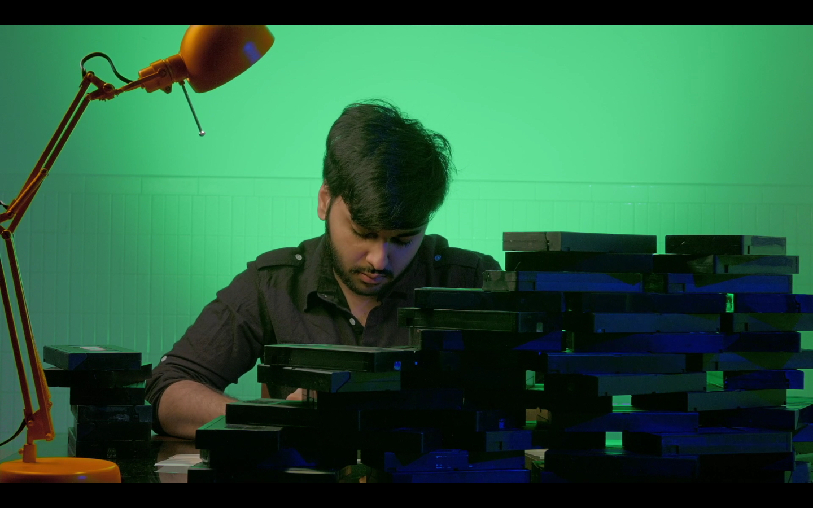

VIDEO HOME SYSTEM traces the convergence of popular culture and politics in Pakistan during the 1980s and 1990s. This video showcases the connections between pop culture and nationalism, and how bootleg economies kept the cinema industry alive during periods of censorship.
Sharlene Bamboat is a Tiohtià:ke/Montreal-based artist working primarily in non-fiction moving image. Sound and experimental sonic strategies are central to her practice, and her films often emerge from deep listening and experimentation in collaboration with others. In addition to her artistic practice, Sharlene works in the cultural sector, contributing to artist-run organizations and collectives in Canada, and working as a creative producer with artists both locally and internationally.



TECHNOSPACES ON FILM captures the blur and the background of the already and soon-to-be obsolete technologies abutting and intruding into our lives. Together we will watch films and moving image works that examine different aspects of the affective and extractive behaviours inherent in our digital interactions to reflect on the 'real' costs of these choices. The film screening hopes to provide an expressive glance back into the ways contemporary artists and independent filmmakers in particular have worked with, critiqued and subverted digital tools/spaces and our relationships to them.
This screening is programmed with: Fresh Kill (Shu Lea Cheang, 1994)